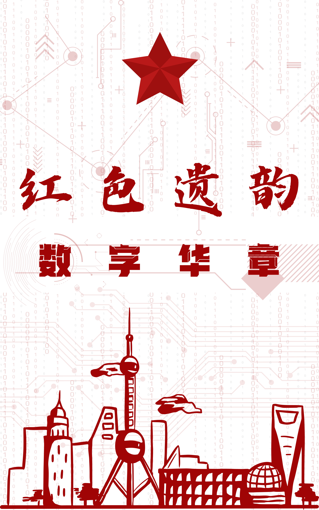

实地调研案例
活动策划 | 课题研究 | 新闻采访

项目背景
通过观察，发现城市与乡村红色文旅产业存在共性，但发展程度不同。因此，提出"红色文旅与科技融合"的解决方案，为文旅事业发展提供参考。
我的工作
负责组建团队开展调研，撰写调研策划案、调研报告、推文等，运营公众号，联系各方人员、设计采访流程，为调研顺利开展做出贡献。
项目成果
- 完成对上海、安徽等地红色文旅产业调研，形成调研报告
- 调研成果获得院级一等奖、优秀团队、优秀个人，校级优秀团队、优秀调研报告等荣誉奖项
- 调研经历得到各级媒体报道，引发广泛传播
- 全体队员提升了调研访谈、文案撰写、活动策划、公众号运营等综合能力
调研思路
通过前期调研，了解红色文旅产业现状，发现其共性与差异；再选择代表性案例——上海与安徽分别作为城市和乡村红色文化的标志性地区，通过实地走访，获取一手资料，分析原因，提出解决方案。
资料下载
点击下方按钮下载相关调研资料
联系方式
邮箱：Zihan1927@Outlook.com
电话：+86-156-5537-9189/+852-4490-8056
微信：asakawa2134020115